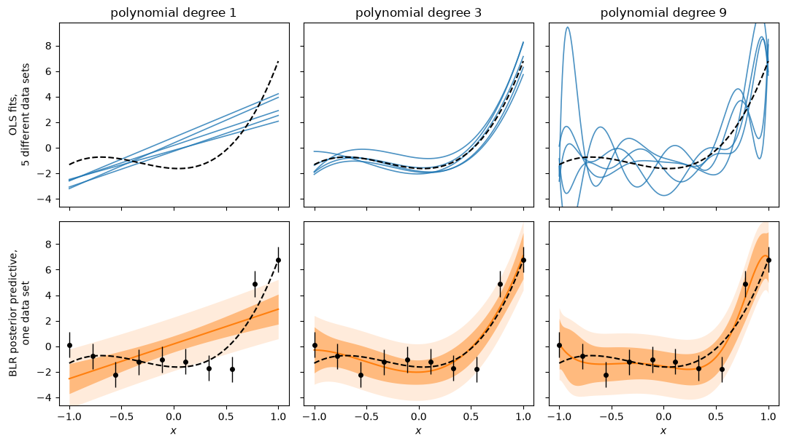

8.6. A Bayesian view of bias and variance#
In the previous sections we built up Bayesian linear regression using a normal likelihood (8.34) and a Gaussian prior (8.37). The resulting posterior is also Gaussian (8.43), with mean \(\tilde{\parsLR}\) and covariance \(\tildecovparsLR\). A very broad prior recovers the least-squares optimum \(\optparsLR\) as the posterior mode, while an informative prior pulls the parameters towards the prior mean.
In this section we look at what that pull does to predictions, and we use it to introduce two issues that will be central when we discuss model validation for Machine learning in Part IV (Section 25.3): a model can be too simple or too flexible for the data at hand, and the two failure modes look very different. The Bayesian and the frequentist descriptions of this differ in one respect that is worth being clear about from the start.
Fixing parameters and varying data, or fixing data and varying parameters
The frequentist analysis of an estimator imagines a fixed, true parameter vector \(\parsLR_\mathrm{true}\) and asks how a fitted quantity would scatter if the experiment were repeated with fresh noise, over data sets that were never collected. Bayesian inference does the opposite: it fixes the one data set we actually have and treats \(\parsLR\) as the uncertain quantity. Both are legitimate views. They just lead to different questions and different answers, and it is easy to confuse them.
Model complexity: underfitting and overfitting#
Consider the polynomial data-generating process from the addendum of Section 8.3: a cubic function with random coefficients, measured at \(N_d=10\) points with noise \(\sigmares = 1\). We fit it with polynomials of degree 1, 3 and 9; note that the degree-9 model has \(N_p = N_d\) parameters. The figure below demonstrates two different data fitting scenarios.
Top row: ordinary least squares, repeated for five independent noisy data sets from the same data-generating process. Each fit is a single curve, a point estimate; the spread among the five curves shows how much that estimate depends on which data set we happened to get.
Bottom row: Bayesian linear regression with a broad Gaussian prior, \(\sigma_{\paraLR}=10\), applied to one data set. The result is a distribution over curves, summarised by the posterior predictive mean and its \(2\sigma\) band.

The dashed line is the true cubic. In the bottom row the darker band is the \(2\sigma\) uncertainty of the model prediction itself (from the posterior of \(\parsLR\)), the lighter band adds the measurement noise \(\sigmares\).
Read the top row first. The straight lines (degree 1) agree closely with each other but are all wrong in the same way: the model is too simple to follow the data, and no amount of resampling will fix that. This is underfitting, and the systematic offset is what we will later call bias. The degree-9 fits show the opposite problem: each curve passes exactly through its own ten data points, but the curves differ wildly from one another because they are following the noise. This is overfitting, and the scatter between fits is what we will call variance. The cubic is a compromise: a little scatter, no systematic offset.
Now compare with the bottom row. The Bayesian analysis does not have several data sets to compare; it has one. Yet it displays the same information in a different form. For degree 1 the predictive band is narrow but misses the data: the model is confident and wrong. For degree 9 the band is widest where the OLS curves scatter most, near the edges and between data points, because those are the directions in parameter space that a single data set fails to pin down. Even the broad prior used here has tamed the wiggles that made the OLS fits so erratic, since it penalises large coefficients. What the frequentist reads off from imagined repetitions, the Bayesian reads off from the posterior width.
What the predictive distribution contains#
Recall from Section 8.4 that for a new input \(\testinput\), with corresponding row \(\widetilde{\dmat}\) of basis functions, the posterior predictive distribution (8.46) is normal,
Its variance has two parts. The term \(\sigmares^2\) is the noise of a future measurement (the lighter band in the figure); it is irreducible and does not shrink as we collect more data of the same quality. The term \(\widetilde{\dmat}\tildecovparsLR\widetilde{\dmat}^T\) is our remaining uncertainty about \(\parsLR\) (the darker band); it is a property of our state of knowledge and shrinks with more data. In machine-learning language these are called aleatoric and epistemic uncertainty. In the frequentist decomposition of Part IV, \(\sigmares^2\) reappears as the irreducible noise term, while the variance term is the counterpart of the epistemic part. Bias has no counterpart in the posterior width: a model that is too simple can be confidently wrong, as the degree-1 panel shows.
The prior as a regulariser#
The prior width \(\sigma_{\paraLR}\) is what kept the degree-9 model in the bottom row under control. Its effect can be stated in a form that a frequentist would recognise.
BLR with a Gaussian prior is ridge regression
Maximising the posterior (8.42) is the same as minimising
which is the cost function of ridge regression (or Tikhonov regularization), with solution \(\tilde{\parsLR} = (\dmat^T\dmat + \lambda\boldsymbol{1})^{-1}\dmat^T\data\). The regularization strength \(\lambda\) that a frequentist would tune by cross-validation is here the ratio of residual variance to prior variance: a penalty otherwise introduced by hand is a statement of prior belief about the size of the parameters.
A tight prior (\(\lambda\) large) pulls all coefficients towards zero and pushes the model towards underfitting; a broad prior (\(\lambda \to 0\)) returns the least-squares fit with all its scatter. The trade-off between the two failure modes is not removed by the Bayesian framework. What changes is how the balance point is chosen: rather than a tuning parameter fixed on held-out data, the prior width is a modelling assumption that can be stated, justified and criticised like any other. Another consequence is visible in the figure: since \(\tildecovparsLR^{-1} = \covparsLR^{-1} + \sigma_{\paraLR}^{-2}\boldsymbol{1}\) is always invertible, BLR can fit a model with more parameters than data points, while OLS cannot.
Looking ahead#
In Section 25.3 we will make the top row of the figure quantitative: bias and variance will be defined as expectation values over repeated data sets, and the expected squared prediction error will be shown to decompose into bias\(^2\) + variance + noise. Bayesian linear regression is a good test bed for that theorem, because the posterior mean \(\tilde{\parsLR}\) is itself an estimator whose bias and variance can be computed in closed form. Readers who want to see this now can open the block below; everyone else can safely skip it until Part IV.
Advanced: bias and variance of the posterior mean
The posterior mean as an estimator. The Bayesian result of Section 8.4 is a distribution, not a number. But the posterior mean
is a number (a vector of them), and we are free to ask how it behaves under repeated sampling of \(\data\). We call \(\boldsymbol{S}\) the shrinkage matrix. Its second form follows from \(\tildecovparsLR^{-1} = \covparsLR^{-1} + \sigma_{\paraLR}^{-2}\boldsymbol{1}\). As \(\sigma_{\paraLR}\to\infty\), \(\boldsymbol{S}\to\boldsymbol{1}\) and \(\tilde{\parsLR}\to\optparsLR\). The shrinkage is not uniform: a direction the data constrain sharply is barely affected, while a direction the data say little about is pulled strongly towards the prior mean.
Now let the data be generated by the model itself with fixed but unknown \(\parsLR_{\rm true}\),
and draw many data sets with \(\dmat\) held fixed. The least-squares estimator (8.18) is unbiased with sampling covariance
so the matrix \(\covparsLR\) that entered (8.39) as the curvature of the log-likelihood is also the sampling covariance of the OLS estimator. Applying \(\boldsymbol{S}\) gives, for the posterior mean,
Bias and variance of a prediction. The quantity to get right at a test input is the noise-free value \(\widetilde{\dmat}\parsLR_{\rm true}\), and our estimate is \(\widetilde{\dmat}\tilde{\parsLR}\). From (8.54) and (8.51),
The bias is proportional to \(1/\sigma_{\paraLR}^2\): it is the price of the prior and vanishes only in the uninformative limit. Comparing with a noisy future measurement \(\testoutput = \widetilde{\dmat}\parsLR_{\rm true} + \epsilon\) adds one more term,
which is the decomposition derived in general in Section 25.3. Underfitting is the bias-dominated regime (\(\sigma_{\paraLR}\) small, \(\boldsymbol{S}\to\zeros\)); overfitting is the variance-dominated regime (\(\sigma_{\paraLR}\) large, \(N_p\) approaching \(N_d\) so that \(\covparsLR\) has large eigenvalues).
Scalar illustration. For a single parameter estimated from \(N_d\) repeated measurements (\(\dmat^T\dmat = N_d\)) everything collapses to scalars,
The code cell below plots Bias\(^2\) and Var against the prior width for \(N_d = 20\), \(\sigmares = 1\), \(\paraLR_{\rm true} = 2\). Bias\(^2\)+Var has its minimum at \(\sigma_{\paraLR}^2 = \paraLR_{\rm true}^2\), exactly where the prior correctly describes the size of the parameter.